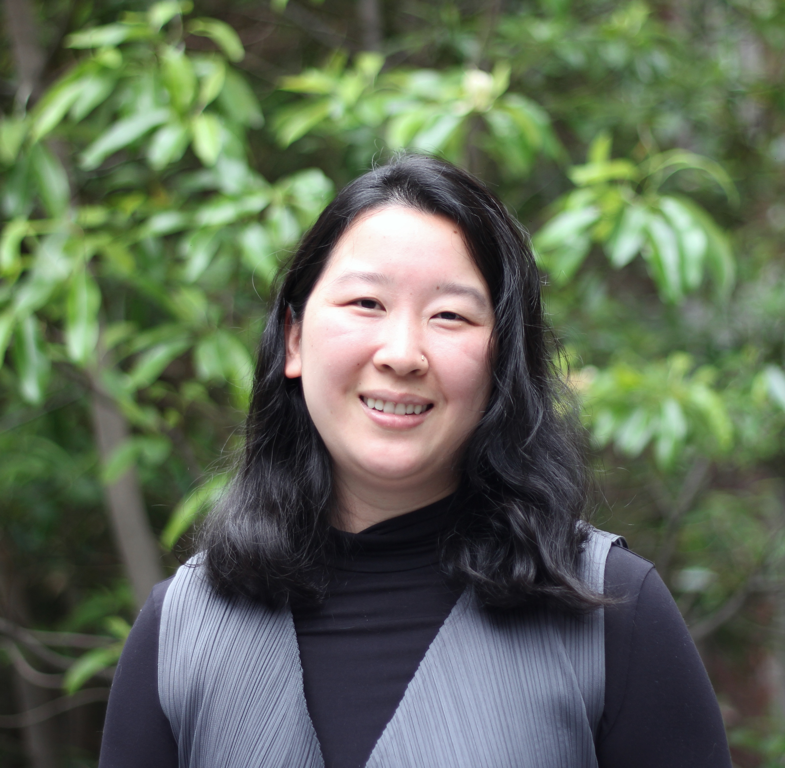

• April 2025: Attending CHI News Futures Workshop in Yokohama, Japan to present “Perceiving Politics on TikTok A User-Centered Approach to Understanding Political Content on TikTok”.
Welcome!
I'm a 3rd-year PhD student at the University of Pennsylvania in the Computer and Information Science department. I am grateful to be advised by Professor Danaé Metaxa as a member of Penn HCI.
My research draws from Human-Computer Interaction and Computational Social Science to design experiments and build systems that help us understand how algorithms and online content affect people, particularly in areas like civic information consumption and targeted advertising. My aim is to inform the design of algorithmic systems that are more transparent, equitable, and accountable to their users.
Prior to Penn, I spent three years working in industry as a software engineer at Sisu Data and Apple. I earned an MS in Computer Science and a BS in Symbolic Systems from Stanford University. My work has been generously supported by an AWS gift for research in Trustworthy AI.
News
• November 2024: I will be attending CSCW in San Jose, Costa Rica to present our work, “Lower Quantity, Higher Quality Auditing News Content and User Perceptions on Twitter/X Algorithmic versus Chronological Timelines”.
• August 2024: My paper with Shengchun Huang won First Place Faculty Paper, Political Communication Division at Association for Education in Journalism and Mass Communication (AEJMC)!
• July 2024: I went to IC2S2 at the Univeristy of Pennsylvania to present work on auditing social media news feeds.
Research
Perceiving Politics on TikTok: A User-Centered Approach to Understanding Political Content on TikTok
Jason Greenfield, Stephanie Wang, Danaé Metaxa.
News Futures Workshop at ACM CHI 2025
Stephanie Wang*, Shengchun Huang*, Alvin Zhou, and Danaé Metaxa.
ACM CSCW 2024
[PDF] [Blog post] [Penn coverage]